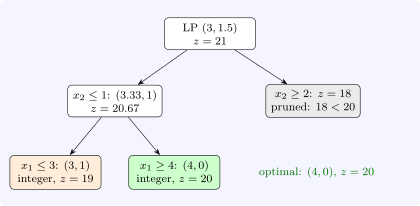

9.3 Branch and bound
Branch and bound (Land and Doig, 1960) searches a tree of subproblems, each the original IP with some variables’ bounds tightened. For a maximisation:
- (1)
- Solve the LP relaxation of a subproblem. If it is infeasible, discard the subproblem.
- (2)
- If its value is no better than the best integer solution found so far (the incumbent), discard it: no integer solution below it can be better (pruning by bound).
- (3)
- If the LP solution is integral, it is the best solution of the subproblem; if it beats the incumbent, it becomes the incumbent.
- (4)
- Otherwise choose a variable with fractional value \(x_j^*\), and branch: create two subproblems with \(x_j \leq \lfloor x_j^*\rfloor \) and \(x_j \geq \lceil x_j^*\rceil \). Every integer solution of the parent lies in one of them, and the current LP solution in neither.
Theorem 9.3.1. If the LP relaxation’s feasible region is bounded, branch and bound terminates, and the final incumbent is an optimal solution (or the IP is infeasible if there is none).
Proof. Each branching splits the integer points of a subproblem between two children and excludes the parent’s fractional LP point. Since the region is bounded, each variable has finitely many integer values available, so along any path of the tree the bounds can be tightened only finitely often, and the tree is finite. A subproblem is discarded only if it is infeasible, if its LP bound shows it contains nothing better than the incumbent, or if its best integer point has been considered; so the optimum is never discarded. □
Example 9.3.2. Maximise \(5x_1 + 4x_2\) subject to \(6x_1 + 4x_2 \leq 24\), \(x_1 + 2x_2 \leq 6\), \(x \geq 0\) integer. The LP optimum is \((3, 1.5)\) with \(z = 21\). Branching on \(x_2\): the branch \(x_2 \leq 1\) has LP optimum \((3.33, 1)\), \(z = 20.67\); branching on \(x_1\) gives the integer solutions \((3, 1)\), \(z = 19\), and then \((4, 0)\), \(z = 20\), the incumbent. The branch \(x_2 \geq 2\) has LP value \(18 < 20\) and is pruned without further work. The optimum is \((4, 0)\), \(z = 20\), one less than the LP bound (Figure 9).

The order of exploration matters. Depth first finds integer solutions quickly and keeps memory small; best bound (always expanding the open node with the largest LP value) proves optimality with the fewest nodes. Each node’s LP differs from its parent’s by one bound, so the dual simplex method re-solves it in a few pivots from the parent’s basis. The difference between the incumbent and the best open bound, the gap, measures how far from proved optimality the search is, and solvers report it as they run.
Questions on this section
Stuck on something here? Ask below and it stays attached to this topic.